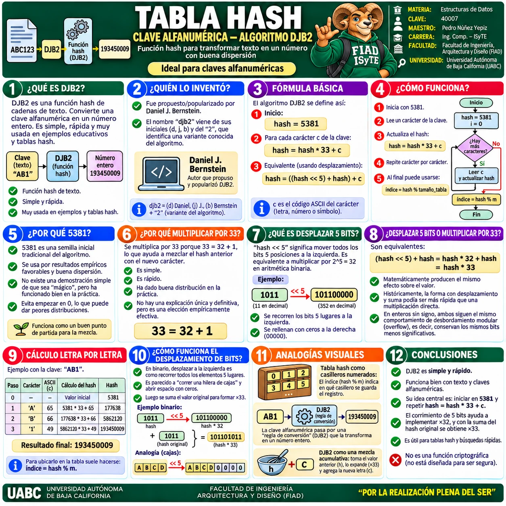
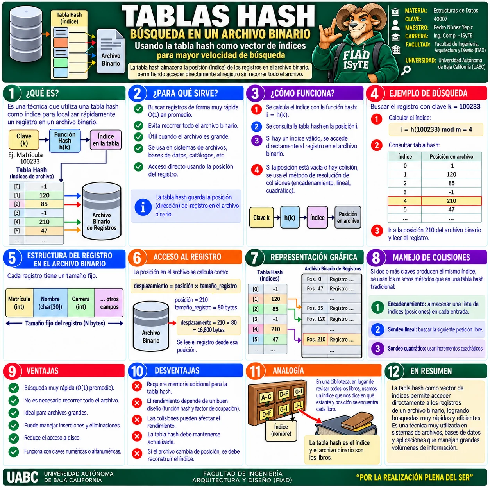
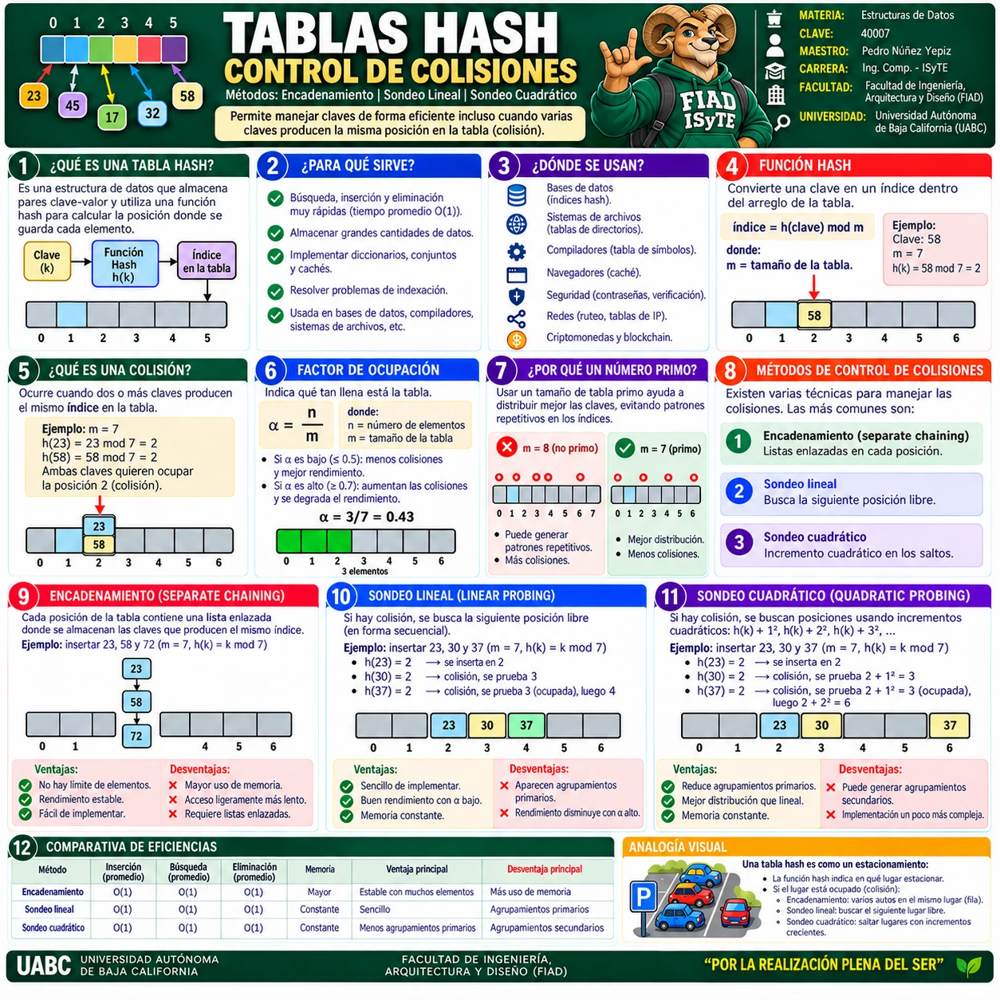
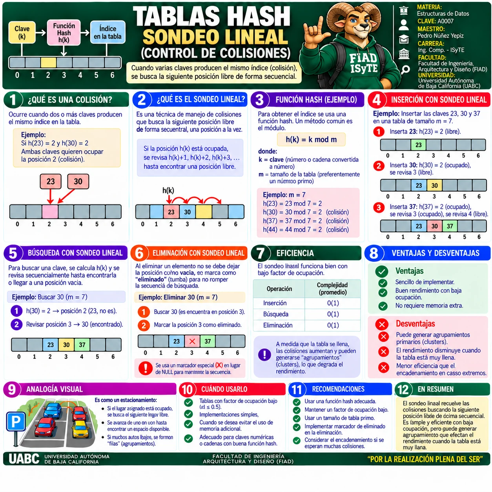
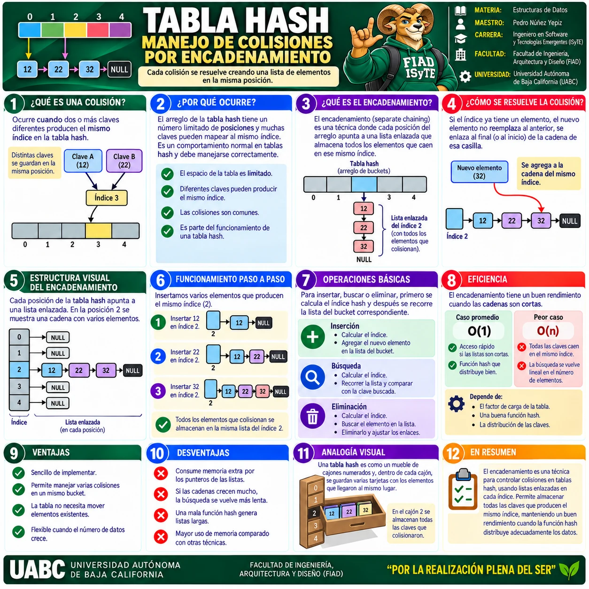

🖼️ Galería visual
Las miniaturas se muestran de dos en dos para reducir el desplazamiento. Selecciona una infografía para verla a pantalla completa.

1 · Tablas Hash · Visión general
Qué son, para qué sirven, función hash, factor de ocupación, colisiones y métodos básicos de resolución.

2 · Búsqueda en archivo binario
Uso de una tabla hash como vector de índices para localizar registros rápidamente en un archivo binario.

3 · Control de colisiones
Comparación general entre encadenamiento, sondeo lineal y sondeo cuadrático.

4 · Sondeo lineal
Resolución de colisiones buscando secuencialmente la siguiente posición libre de la tabla.

5 · Encadenamiento
Control de colisiones mediante listas enlazadas asociadas a cada bucket de la tabla hash.
💡
RECOMENDACIÓN
Comienza con la visión general y después revisa control de colisiones, encadenamiento, sondeo lineal y la aplicación con archivos binarios.
Comienza con la visión general y después revisa control de colisiones, encadenamiento, sondeo lineal y la aplicación con archivos binarios.